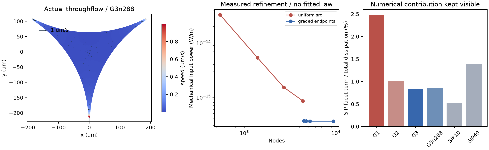

← FROTH 研究入口OPEN THROUGHFLOW / MECHANICAL REFERENCE
先让入口流量和边界做功对得上。
三个有限入口的固定截面 Stokes 参考。9组基础控制和6组端部加密，保留独立混合形式、流量积分与保存速度场复核。尚未包含开放表活输运或边界积液。
0.00163%最细两组入口功率相对变化
0.285%同组原生有限元内部速度场差
0.42% / 0.71%SIP参数减半 / 加倍的功率差

矢量 PDF · 端部加密及7项离散检查 · 独立收支及原生速度复核 · 基础9组与10项检查 · 源码哈希与执行来源
固定不可压缩域的三个有符号入口流量之和为零。这里是两口进、一口出的通流参考，不是三张膜向边界净积液。输入速度1μm/s为诊断设定，未做实验标定。边界机械功率与耗散按单位轴向长度报告，单位W/m；SIP面项单列，不能全部算作真实黏性。
执行与结果
r=.4mm，入口h=.8μm，μ=.001Pa·s；外向流量(q0,−q0/2,−q0/2)，q0=8×10⁻¹³m²/s。弧面法向速度为零，入口指定均匀法向速度，切向牵引自由。连续P2流函数的边界增量提供入口数据，BDM旋度保持无散；反力做功补齐能量输入。粗网格混合BDM/P0解与流函数解速度系数差1.05×10⁻⁹，反向、加倍与线性叠加检查通过。
G1/G2/G3递增入口附近的弧向采样，G3n288再增加内部及弧向分辨率。SIP10/40使用G3同一网格。真实圆弧几何及材料输入相同，多边形近似随边界细化改善。最细内部速度比较使用3491个共同内部点的原生BDM值，未用单元中心插值；它不覆盖每个狭窄入口单元，不能据此宣称全域误差有界。
哪些失败改变了实现
均匀弧网格末两级功率曾差约79%，SIP占约51%，不能作为可信入口阻力。端部加密后这两项显著下降。初次分级又暴露了共线边界点形成的舍入面积伪三角形，以及细节点沿径向复制形成的瘦单元；容量和功率门槛将它们拒绝。
现按局部浮点面积分辨率排除零面积伪单元，并将端部细化限制在近边界区域，合并与分级节点几乎重合的均匀采样。没有裁剪浓度、修正质量或放宽功率阈值。默认网格节点、三角形及容量仍与冻结参考完全相同，见默认网格复核。失败日志、旧源码ZIP及被拒结果保留在研究仓库。
基础矩阵中零流量的相对误差曾除以近零参考而误判；现统一用预先声明q0衡量绝对流量误差。混合求解先前未达到速度一致性目标，使用坐标平衡与原矩阵迭代改进后通过；原始残差与后向误差均记录，不以小后向误差替代物理收敛。
下一步：实际接收与送出表活
开放流动之后，需要用真实边界中点流函数计算控制体通量，并加入入口两侧表面的端点输运。表活入口和出口应分别按入流浓度与实际供体处理；压力功、化学功及界面压缩功也要进入收支。完成这些接口后，再允许边界积液与几何运动，接入多泡网络、气体粗化和有限速破裂。